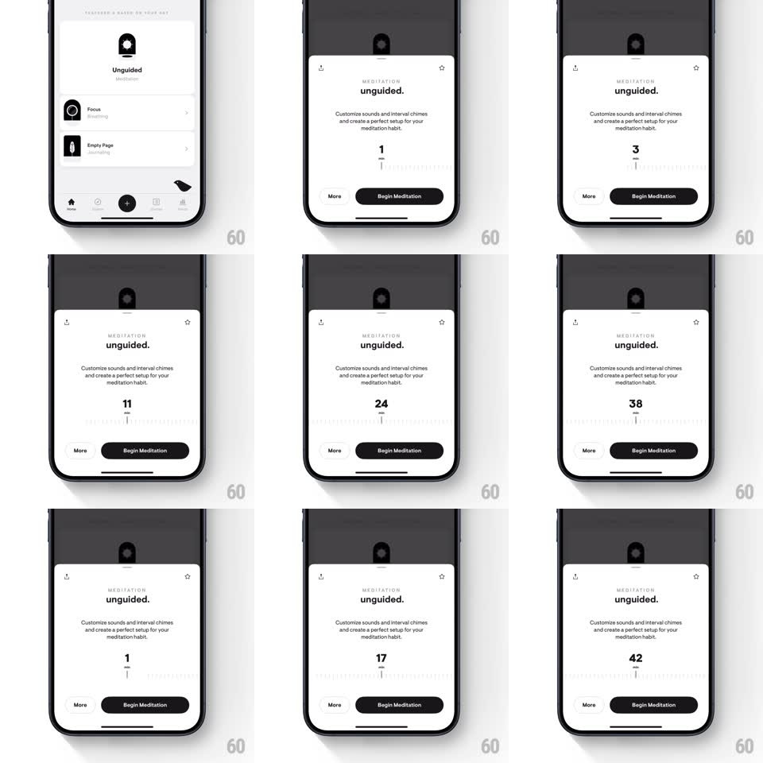

Media
Frame-by-frame

Rebuild this interaction 1:1: Stoic's meditation duration slider - a ruler of tick marks slides with real inertia beneath a big minute count, snapping to whole minutes.

Rebuild this interaction 1:1: Stoic's meditation duration slider - a ruler of tick marks slides with real inertia beneath a big minute count, snapping to whole minutes. ## Integration Integration: stack-agnostic spec - springs given as stiffness/damping, timed motions as duration + curve; map every value to your framework and animation library of choice. ## Scene The "unguided." meditation setup sheet (small-caps MEDITATION kicker, title, copy about sounds and chimes). Middle: a large minute number with "min" beneath it, and below that a horizontal ruler of tick marks with a fixed center indicator. Bottom: a More text button and a black "Begin Meditation" pill. ## Motion spec Pattern: inertial ruler slider. - Drag the ruler: ticks track the finger 1:1; flicking imparts real momentum (decay ~0.95/frame) with ticks blurring slightly at speed. - The minute number updates live as the center indicator crosses each minute tick; major ticks (5-minute marks) are taller and the number's digits roll (old digit slides up, new from below, 120ms) rather than cut. - Release: the ruler decelerates and snaps to the nearest minute (spring ~380/24); a light haptic ticks on each minute boundary while scrubbing and a slightly stronger one on snap. - The center indicator is a fixed vertical hairline; the ruler moves under it - the indicator never travels. - The range is clamped (1-60 min) with a rubber-band stretch past the ends (0.3x resistance) and spring-back on release. - Begin Meditation presses with a quick scale (0.97, 100ms). ## Calibration - Ticks are thin and quiet (gray-300); the number carries the screen. - Inertia must feel physical: a hard flick should travel 10+ minutes before snapping. ## Reduced motion Ruler scrolls without momentum; snaps instantly. ## Don't miss - The sheet is otherwise static - the ruler is the only moving part, and it reads as machined, not playful. - "min" sits directly under the number in small gray caps; don't float it beside the digits.